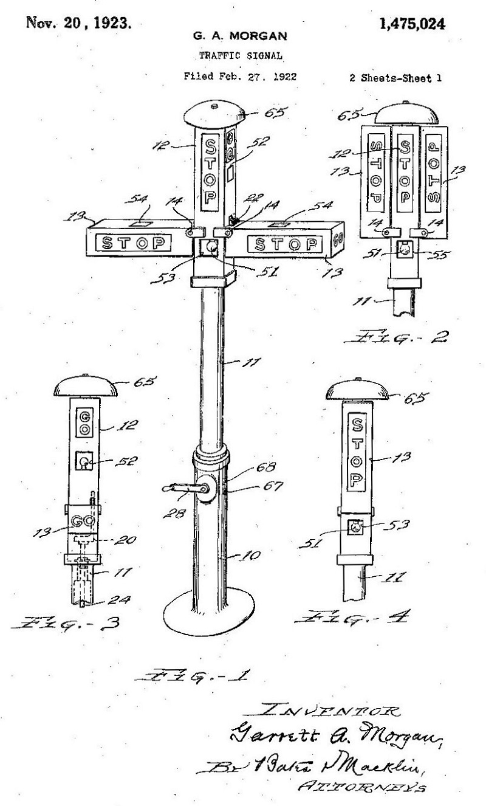
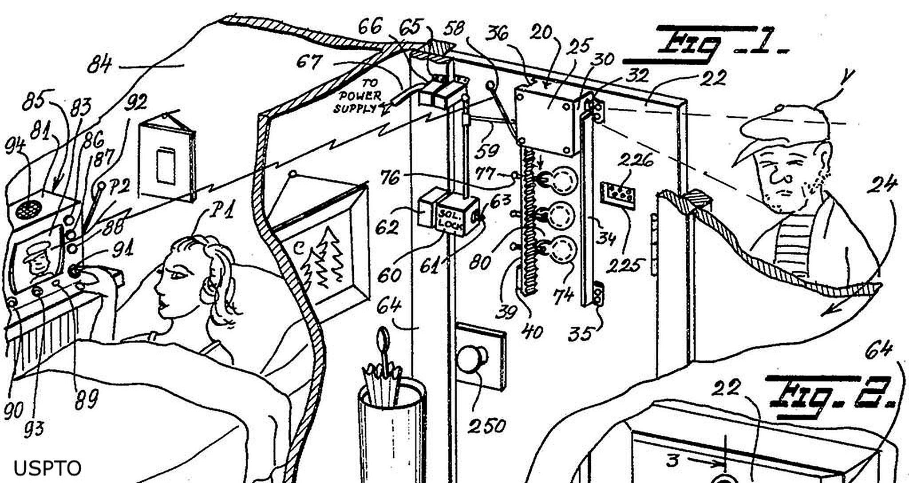
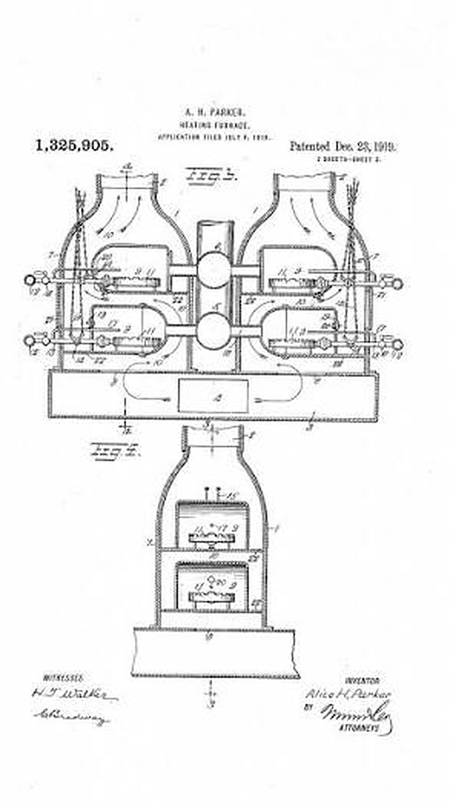
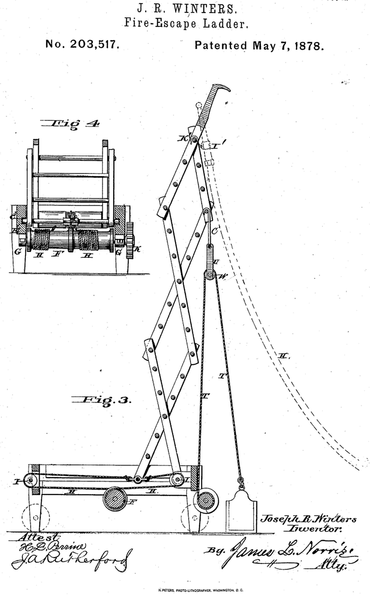

TAP TO EXPAND
GARRETT MORGAN · 1923
Three-position traffic signal
His signal added a warning phase and helped transform traffic safety.
You use it. You see it. You hear it. Now look again: behind the everyday are stories worth telling.

His signal added a warning phase and helped transform traffic safety.

Concerned about neighborhood safety, Brown designed a home security system with cameras, a monitor, and two-way communication.

His lasting machine automated a crucial step in shoemaking and helped make footwear more affordable.

She patented a natural-gas heating furnace that could distribute warm air to different rooms and control heating zones independently.

He patented a fire-escape ladder designed to help firefighters reach people quickly during emergencies.
Discover how Black innovators reshaped medicine, space, physics, communication, engineering, transportation, and electricity.
From surgery to a camera on the Moon, from a resistor to an internet call: Black innovation appears in big and small problems that still shape everyday life.
We are not looking for one person who “invented” each genre. We follow pioneers and revolutionaries who transformed how music is composed, performed, recorded, and heard.
Two foundational voices who brought the blues to wider audiences and turned experience and memory into musical language.
SHIFT → VOICE AS IDENTITYSoloists, composers, and arrangers who turned jazz into a laboratory of sound.
SHIFT → THE MUSICIAN AS PROTAGONISTGospel, blues, and R&B crossed with the electric guitar and helped build rock.
SHIFT → A NEW ENERGYGospel tradition met R&B to create a new vocal and emotional intensity.
SHIFT → EMOTION IN THE LEADRhythm moved to the foreground: bass, drums, and percussion built a new language.
SHIFT → THE BEAT AS THE ENGINEIn the Bronx, turntables, words, dance, and street art became a global culture.
SHIFT → TECHNOLOGY AS THE INSTRUMENTPeople of the Black diaspora transformed how we see, photograph, write, design, and tell our stories. Innovation lives here too.
A new technique, a way to document a community, a school that opens opportunities, or a work that changes the conversation can also be innovation. In this room, impact is the center of the story.

Augusta Savage turned art into representation and opportunity. Her work and schools helped create space for Black artists during the Harlem Renaissance.

With vivid colors and simplified forms, Lawrence turned major chapters of African American history into series that could be read as visual narratives.

Van Der Zee photographed weddings, families, artists, and Harlem scenes for decades, creating an extraordinary visual archive of Black urban life.
_portrait.jpg)
A writer, anthropologist, and storyteller, Hurston collected African American stories, expressions, and traditions and carried them into literature and cultural record.

Parks used photography, film, and writing to document inequality, identity, and everyday life. His perspective turned individual stories into national conversations.
At RAÍCES, “inventing” does not only mean building a machine. It can also mean creating a new way to represent, preserve memory, teach, document, or make an experience visible. That is the cultural innovation we want visitors to discover.
Your feedback is collected anonymously through Microsoft Forms and is not displayed publicly on the museum site.
Rate your experience and leave a comment. Your response will be sent securely to the RAÍCES feedback form.
OPEN YOUR MARK FORMResponses are reviewed privately through Microsoft Forms and can be opened in Excel by the museum team.